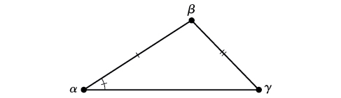
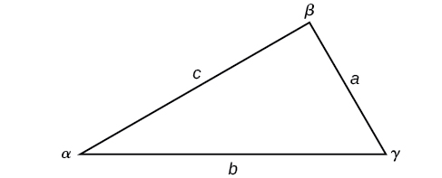
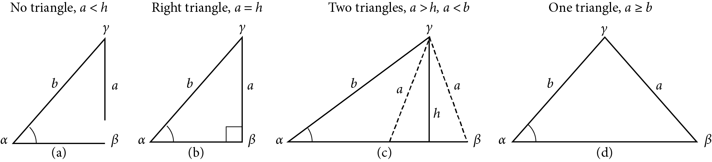

Trigonometry
Any triangle that is not a right triangle is an oblique triangle.
Solving a triangle means finding the measures of all angles and sides given incomplete information.
ASA (angle-side-angle)
AAS (angle-angle-side)

SSA (side-side-angle)


Given a triangle with angles and opposite sides labeled as the triangle
to the right, the ratio of the measurement of an angle to the length of
its opposite side will be equal to the other two ratios of angle measure
to opposite side. All proportions will be equal.
\[\frac{\sin\alpha}{a} = \frac{\sin\beta}{b} = \frac{sin\gamma}{c}\]
For the following exercises, assume the angles are sides are as in the triangle above. Solve each triangle, if possible. Round each answer to the nearest tenth.
\(\alpha = 43^{\circ}\), \(\gamma = 69^{\circ}\), \(a = 20\)
\(\alpha = 37^{\circ}\), \(\beta = 49^{\circ}\), \(c = 5\)
For the following exercises, assume the angles are sides are as in the triangle above. Solve each triangle, if possible. Round each answer to the nearest tenth.
\(a = 4\), \(\alpha = 60^{\circ}\), \(\beta = 100^{\circ}\)
\(\alpha = 132^{\circ}\), \(\gamma = 23^{\circ}\), \(b = 10\)

Comparison of SSA Triangles
Examples
Determine whether there is no triangle, one triangle, or two triangles. Then solve each triangle, if possible. Round each answer to the nearest tenth.
\(\gamma = 113^{\circ}\), \(b = 10\), \(c = 32\)
\(a = 7\), \(c = 9\), \(\alpha = 43\).
\(\beta = 119^{\circ}\), \(b = 8.2\), \(a = 11.3\).